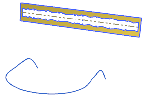
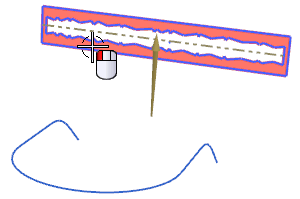
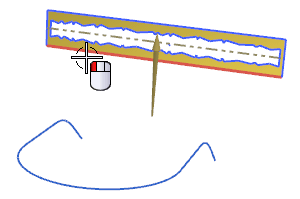
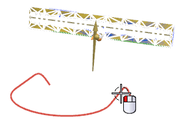
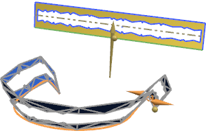

Open des18_85_global_shaping_by_curve .

Choose Edit→Surface→Global Shaping .
In the Global Shaping dialog box, from the Type list, select By Curve.
Select the sheet to deform.

For the Base Curve, select the bottom edge of the surface.

For the Control Curve, use Feature Curves, and select the composite curve on the right end as shown:

Notice the slight twist.

It may be easier to see the twist if in the Preview group, you select Show Result. When you are done examining it, click Undo Result.